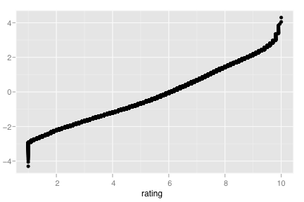
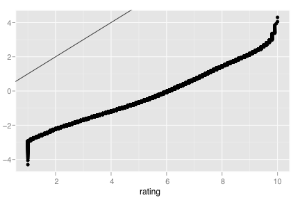
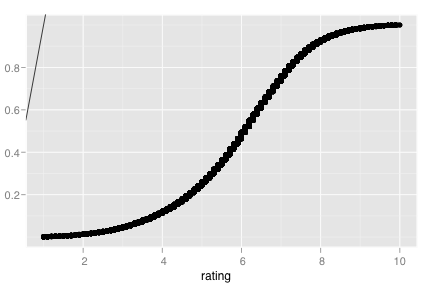
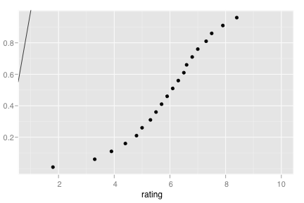
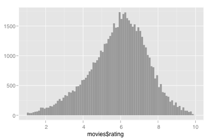
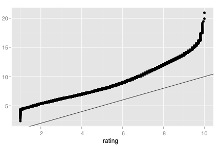
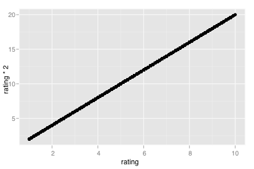
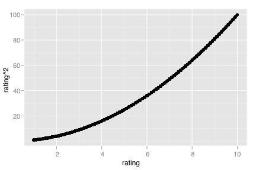

stat_qq
Calculation for quantile-quantile plot
Details
Aesthetics
The following aesthetics can be used with stat_qq. They are listed along with their default value. All geoms and scales can also use the group aesthetic. Read how this important aesthetic works in scale_group. Typically, you will associate an aesthetic with a variable in your data set. To do this, you use the aes function: stat_qq(aes(x = var)). Scales control the details of the mapping between data and aesthetic properties; after each aesthetic are listed scales that can be used with that aesthetic. The scale documentation will also provide references to help you interpret the default values.
Instead of mapping an aesthetic to a variable in your dataset, you can also set it to a fixed value. See the parameters section for details.
y:
..y..(scales: continuous, date, discrete, pow, prob)
Parameters
When an aesthetic is used an a parameter, like stat_qq(quantiles = 3), it will override mappings from data.
quantiles, Quantiles to compute and displaydistribution, NULL
Default geom
geom_point. Override with the geom argument: stat_qq(geom="point").
Examples
> m <- ggplot(movies, aes(x=rating)) > > m + stat_qq()  > m + stat_qq() + geom_abline()  > m + stat_qq(distribution=qunif, min=1, max=10) + geom_abline()  > m + stat_qq(quantiles = seq(0.01, 0.99, by=0.05), distribution=qunif, min=1, max=10) + geom_abline()  > > # Let's explore the distribution of ratings > qplot(movies$rating, geom="histogram", binwidth=0.1)  > > # Looks pretty normal, so we'll compare to a normal distribution > # with parameters estimated from the data > > distn <- fitdistr(movies$rating, "normal") > m + stat_qq(distribution=function(x) qnorm(x, distn$estimate[1], sd=distn$estimate[2])) + geom_abline()> > # Not bad, apart from in the tails > # We'll try something a little longer-tailed > distt <- fitdistr(movies$rating, "t") simpleWarning in dt(x, df, log): NaNs produced simpleWarning in dt(x, df, log): NaNs produced simpleWarning in dt(x, df, log): NaNs produced simpleWarning in log(x): NaNs produced simpleWarning in log(x): NaNs produced simpleWarning in log(x): NaNs produced simpleWarning in log(x): NaNs produced simpleWarning in log(x): NaNs produced simpleWarning in log(x): NaNs produced simpleWarning in log(x): NaNs produced simpleWarning in log(x): NaNs produced simpleWarning in log(x): NaNs produced simpleWarning in log(x): NaNs produced > m + stat_qq(distribution=function(x) qt(x, distt$estimate[3], distt$estimate[1]) * distt$estimate[2]) + geom_abline()  > > ggplot(movies, aes(x=rating, y=rating * 2)) + stat_qq()  > ggplot(movies, aes(x=rating, y=rating ^ 2)) + stat_qq() 